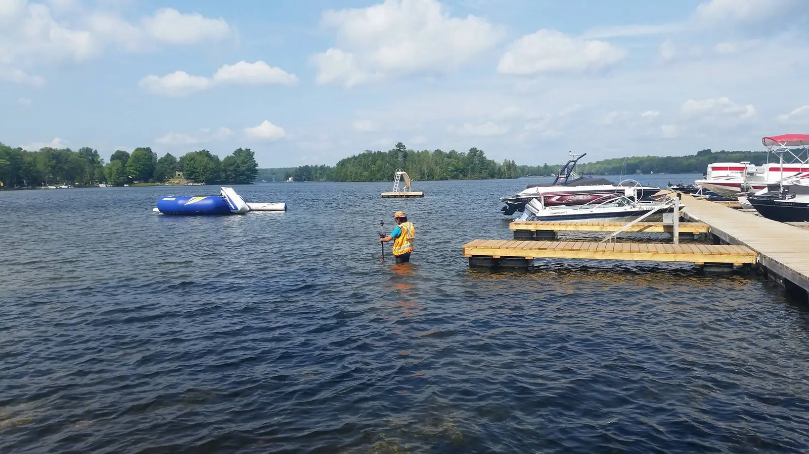

Home / About
Ontario Land Surveyors in Thornton
MeasEarth Inc. surveys land for homeowners, cottagers, builders, lawyers and developers across central Ontario, from a single lot corner to a plan of subdivision.
Who we are
A licensed firm that signs its own work
The firm is led by Phillip Robbins, O.L.S. Every plan and report that leaves the office is reviewed and signed by an Ontario Land Surveyor, the only professional licensed to establish property boundaries in Ontario.
Our crews work with GNSS receivers, robotic total stations, drones and 3D scanners. The office drafts, checks and registers the plans, so the people you speak to are the people doing the work.
We also hold the survey records of several firms that worked in this area before us. Those field notes and plans often make a boundary faster to retrace and more certain.


How we work
Plain answers and a fixed fee
- Fixed fee, agreed before we startYou get one price plus HST in a written proposal. It changes only if you change the scope.
- Signed by an Ontario Land SurveyorEvery plan and report is reviewed and signed by a licensed O.L.S.
- Decades of local survey recordsWe hold the plans and field notes of earlier firms in this area, which helps us retrace old boundaries.
- Field and office under one roofOur own crews measure and our own office drafts, so questions get answered by people who know the job.
Request a quote
Talk to a surveyor about your property
Tell us the property address and what you are planning. We reply with a written, fixed-fee proposal, so you know the price before any work starts.
- The property address or legal description
- What you are doing: buying, building, fencing, severing
- Any old survey or drawing you have (you can attach it on the contact page), and your deadline
Your project
No obligation. We use your details only to prepare the quote.
The form did not load. Please call 705 434 0411 and we will take the details by phone.